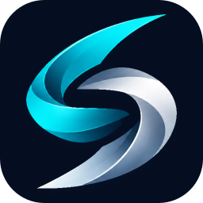

Ghostline
Your own devices, on one private network, from anywhere.
Ghostline links your PCs, servers and Android phone with encrypted WireGuard tunnels. It is free. You run the small server that coordinates it, so nothing depends on us.
Download
Free. No account with Vorivant. Pick your system. Then verify the file.
Windows note. The Windows build is not code-signed yet. Windows SmartScreen may show a warning. This is expected. Check the SHA-256 below before you run it. Choose “More info”, then “Run anyway” only if the checksum matches.
-
Matches your system
Windows
Windows 10 or 11, 64-bit (x64). Zip file.
Download for Windows{{FILE_windows_amd64}} · {{SIZE_windows_amd64}}
SHA-256
{{SHA256_windows_amd64}} -
Matches your system
Linux, x86-64
Any systemd-based 64-bit Linux. tar.gz.
Download for Linux x86-64{{FILE_linux_amd64}} · {{SIZE_linux_amd64}}
SHA-256
{{SHA256_linux_amd64}} -
Matches your system
Linux, ARM64
64-bit ARM with systemd, such as a Raspberry Pi 4 or 5 on 64-bit Linux. tar.gz.
Download for Linux ARM64{{FILE_linux_arm64}} · {{SIZE_linux_arm64}}
SHA-256
{{SHA256_linux_arm64}} -
Matches your system
Android
Android 8.0 or newer. arm64 and armv7. APK for sideloading.
Download for Android{{FILE_android}} · {{SIZE_android}}
SHA-256
{{SHA256_android}} -
Server kit
Run your own coordination server (Headscale and Caddy, with Docker Compose). tar.gz.
Download server kit{{FILE_server_kit}} · {{SIZE_server_kit}}
SHA-256
{{SHA256_server_kit}} -
Source code
The full source for this release. tar.gz.
Download source{{FILE_source}} · {{SIZE_source}}
SHA-256
{{SHA256_source}} -
macOS
Coming later.
Not available yet
The apps need a Ghostline server to join. See the Server kit and the quick start below.
How it works
-
You run a small server
The server kit sets up Headscale, an open-source coordination server, on a Linux VPS you control. It only hands out keys and addresses.
-
Your devices join
Install Ghostline on each device and enter your server address when you sign in. Every device joins your private mesh, called Remota.
-
They talk directly
Traffic between your devices is end-to-end encrypted with WireGuard. Reach any of them from anywhere, as if they were on one local network.
Quick start
Start with the server. Then add your devices. Replace https://your-server.example with your own server address.
1. Server (do this first)
- Get a Linux VPS with Docker installed.
- Point a domain name at it.
- Open ports 443/tcp, 80/tcp and 3478/udp.
- Unpack the server kit and follow
SELF-HOST.mdinside it.
Windows
- Windows blocks scripts from downloaded files. Right-click the zip, choose Properties, tick Unblock, then OK. Or run
Unblock-Fileon the zip in PowerShell. - Unzip it.
- Open PowerShell as Administrator in the unzipped folder.
- Install:
powershell -ExecutionPolicy Bypass -File .\install.ps1 - Join your mesh:
powershell -ExecutionPolicy Bypass -File .\join.ps1 -LoginServer https://your-server.example
Linux
- Unpack the archive:
tar xzf {{FILE_linux_amd64}} - Install it:
sudo ./install.sh - Join your mesh:
sudo ./join.sh --login-server https://your-server.example
On ARM64, use the ARM64 archive instead.
Android
- Allow installs from this source when Android asks.
- Open the APK and install it.
- In the app menu, choose “Use an alternate server”.
- Enter your server address and sign in.
On Windows and Linux, the command-line tool is ghostline. Run ghostline status to see your connection. The background service is called ghostlined.
Verify your download
Each release has a list of checksums, SHA256SUMS. We sign that list with an SSH signing key. Check the signature, then check your file against the list.
Put these three files in the same folder as your download: SHA256SUMS, SHA256SUMS.sig and the public key ghostline-release-signing.pub.
Linux, macOS or Windows with OpenSSH
- Make an allowed signers file from the public key:
echo "release@vorivant.com $(cat ghostline-release-signing.pub)" > allowed_signers - Check the signature. It should say “Good signature”:
ssh-keygen -Y verify -f allowed_signers -I release@vorivant.com -n file -s SHA256SUMS.sig < SHA256SUMS - Check your file:
sha256sum -c SHA256SUMS --ignore-missing
Windows PowerShell
Print the hash of your file. Compare it with the one on this page or in SHA256SUMS:
Get-FileHash .\{{FILE_windows_amd64}} -Algorithm SHA256The public key comes from this same site. For a stronger check, ask us for the key by email and compare it: ghostline@vorivant.com.
Questions
Does it hide my IP on the web?
No. Ghostline connects your own devices. It is not an internet VPN.
Is it free?
Yes. The download is free. You pay only for the server you choose to rent, if you rent one. There is no account with Vorivant.
Who can see my traffic?
Only your own devices. Traffic between them is end-to-end encrypted with WireGuard. Your own server coordinates keys and addresses, and its relay carries encrypted traffic only when two devices cannot connect directly; it cannot read your data. Ghostline has no telemetry, does not upload logs, and does not check for updates by itself.
Why do I need my own server?
Your devices need a coordinator to swap keys and find each other. That is a Headscale server that you run with the server kit. It keeps you in control and means you do not depend on Vorivant. You enter its address when you sign in.
Which Android versions work?
Android 8.0 and newer, on arm64 and armv7 phones. The app is an APK that you install yourself.
What does the server need?
A small Linux VPS with Docker, a domain name pointing at it, and these ports open: 443/tcp, 80/tcp and 3478/udp. The server kit includes step-by-step notes in SELF-HOST.md.
Is there a Mac version?
Not yet. macOS is coming later.
Licences and source
Ghostline includes open-source software. The licences and credits are in THIRD-PARTY-NOTICES.md. The source for this release is here: {{FILE_source}} ({{SIZE_source}}).
Need help? Write to ghostline@vorivant.com.